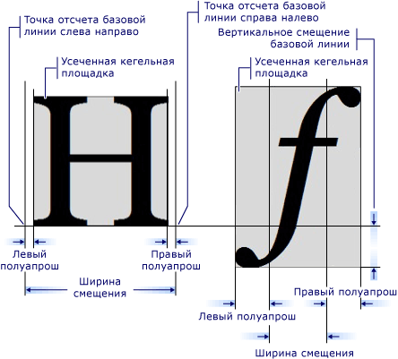

Знакомство с объектом GlyphRun и элементом Glyphs
В этом разделе описывается GlyphRun объекта и Glyphs элемент.
Общие сведения о GlyphRun
Windows Presentation Foundation (WPF) обеспечивает расширенную поддержку текста включая разметку на уровне глифа с прямым доступом к Glyphs для клиентов, которым требуется перехватывать и сохранять текст после форматирования. Эти функции обеспечивают критически важную поддержку различных требований к отрисовке текста в каждом из следующих сценариев.
Отображение на экране документов фиксированного формата.
Сценарии печати.
XAML как язык принтера.
Средство записи XPS-документов (Майкрософт).
Предыдущие драйверы принтера, вывод из приложений Win32 в фиксированный формат.
Формат очереди печати.
Представление документов фиксированного формата, включая клиенты предыдущих версий Windows и другие вычислительные устройства.
Note
Glyphs и GlyphRun предназначены для представления документов фиксированного формата и сценариев печати. Windows Presentation Foundation (WPF) предоставляет несколько элементов для общего макета и UI сценариях, например Label и TextBlock. Дополнительные сведения о макете и сценариях UI см. в статье Оформление в WPF.
Объект GlyphRun
GlyphRun Объект представляет последовательность глифов из одной грани одного шрифта одного размера и с одним стилем отрисовки.
GlyphRun включает детали шрифта, такие как глиф Indices и отдельные позиции глифов. Он также включает в себя исходный Unicode кодовые точки, был произведен запуск из сведения о сопоставлении смещения буфера символ — глиф и флаги каждого символа и глифа.
GlyphRun имеет соответствующий высокоуровневый FrameworkElement, Glyphs. Glyphs может использоваться в дереве элементов и в XAML разметку, представляющую GlyphRun выходных данных.
Элемент Glyphs
Glyphs Элемент представляет выходные данные GlyphRun в XAML. Следующий синтаксис разметки используется для описания Glyphs элемент.
<!-- The example shows how to use a Glyphs object. -->
<Page
xmlns="http://schemas.microsoft.com/winfx/2006/xaml/presentation"
xmlns:x="http://schemas.microsoft.com/winfx/2006/xaml"
>
<StackPanel Background="PowderBlue">
<Glyphs
FontUri = "C:\WINDOWS\Fonts\TIMES.TTF"
FontRenderingEmSize = "100"
StyleSimulations = "BoldSimulation"
UnicodeString = "Hello World!"
Fill = "Black"
OriginX = "100"
OriginY = "200"
/>
</StackPanel>
</Page>
Следующие определения свойств соответствуют первым четырем атрибутам в примере разметки.
| Свойство | Описание |
|---|---|
| FontUri | Указывает идентификатор ресурса: имя файла, URI, или ссылку на ресурс в файле .exe или приложения контейнера. |
| FontRenderingEmSize | Указывает размер шрифта в единицах графической поверхности (по умолчанию — 0,96 дюйма). |
| StyleSimulations | Задает флаги для полужирного шрифта и курсива. |
| BidiLevel | Задает уровень двунаправленного макета. Четные и нулевые значения подразумевают макет слева направо; нечетные значения подразумевают макет справа налево. |
Свойство Indices
Indices Свойство является строкой спецификаций глифа. Если последовательность глифов образует единый кластер, спецификации первого глифа в кластере предшествует спецификация того, сколько глифов и сколько кодовых точек объединяются для формирования кластера. Indices Свойство собирает в одной строке следующие свойства.
Индексы глифов
Дополнительная ширина глифа
Объединение векторов присоединения глифа
Сопоставление кластера от кодовых точек к глифам
Флаги глифов
Спецификация глифа имеет следующий вид.
[GlyphIndex][,[Advance][,[uOffset][,[vOffset][,[Flags]]]]]
Метрики глифа
Каждый глиф определяет метрику, задающую способ выравнивания с другими Glyphs. На следующем рисунке определяются различные типографические качества двух разных символов глифа.

Разметка глифа
В следующем примере кода показано, как использовать различные свойства Glyphs элемент XAML.
<!-- The example shows how to use different property settings of Glyphs objects. -->
<Canvas
xmlns="http://schemas.microsoft.com/winfx/2006/xaml/presentation"
xmlns:x="http://schemas.microsoft.com/winfx/2006/xaml"
Background="PowderBlue"
>
<Glyphs
FontUri = "C:\WINDOWS\Fonts\ARIAL.TTF"
FontRenderingEmSize = "36"
StyleSimulations = "ItalicSimulation"
UnicodeString = "Hello World!"
Fill = "SteelBlue"
OriginX = "50"
OriginY = "75"
/>
<!-- "Hello World!" with default kerning -->
<Glyphs
FontUri = "C:\WINDOWS\Fonts\ARIAL.TTF"
FontRenderingEmSize = "36"
UnicodeString = "Hello World!"
Fill = "Maroon"
OriginX = "50"
OriginY = "150"
/>
<!-- "Hello World!" with explicit character widths for proportional font -->
<Glyphs
FontUri = "C:\WINDOWS\Fonts\ARIAL.TTF"
FontRenderingEmSize = "36"
UnicodeString = "Hello World!"
Indices = ",80;,80;,80;,80;,80;,80;,80;,80;,80;,80;,80"
Fill = "Maroon"
OriginX = "50"
OriginY = "225"
/>
<!-- "Hello World!" with fixed-width font -->
<Glyphs
FontUri = "C:\WINDOWS\Fonts\COUR.TTF"
FontRenderingEmSize = "36"
StyleSimulations = "BoldSimulation"
UnicodeString = "Hello World!"
Fill = "Maroon"
OriginX = "50"
OriginY = "300"
/>
<!-- "Open file" without "fi" ligature -->
<Glyphs
FontUri = "C:\WINDOWS\Fonts\TIMES.TTF"
FontRenderingEmSize = "36"
StyleSimulations = "BoldSimulation"
UnicodeString = "Open file"
Fill = "SlateGray"
OriginX = "400"
OriginY = "75"
/>
<!-- "Open file" with "fi" ligature -->
<Glyphs
FontUri = "C:\WINDOWS\Fonts\TIMES.TTF"
FontRenderingEmSize = "36"
StyleSimulations = "BoldSimulation"
UnicodeString = "Open file"
Indices = ";;;;;(2:1)191"
Fill = "SlateGray"
OriginX = "400"
OriginY = "150"
/>
</Canvas>